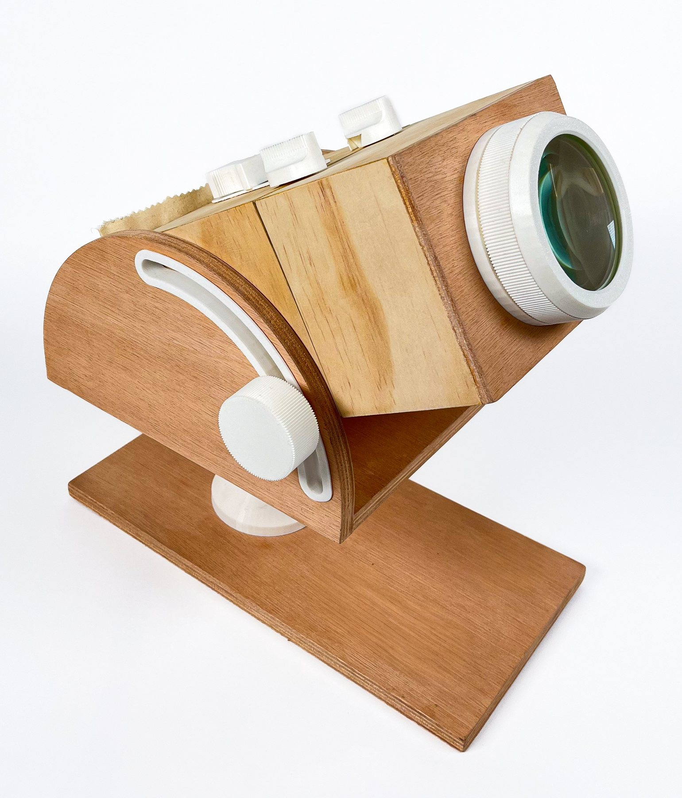

TwoFold

Design methodology
User-centered/interaction design
Course4.031: Design Studio: Objects and Interaction (Prof. Marcelo Coelho)
Timeline6 weeks, Fall 2025
TeamSophia Letch (Wellesley '27)
Tools
Woodworking
CNC routing
SOLIDWORKS
FDM 3D printing
Cyanotype imaging
TwoFold is a cyanotype camera with two modes: opened, it makes photograms; closed, it takes photographs — doubling the exposure opportunities of a single device. It relies only on traditional cyanotype chemistry and mechanical movement, as a homage to historical photographic and development methods. I co-developed TwoFold with Sophia Letch and was responsible for its mechanical design, user interaction, CAD, and fabrication.
Context/Motivation
In the first half of 4.031, our brief was to explore interaction design by building a camera with no electronics — using cyanotype printing in place of a sensor — with a strong push toward woodworking.
Problem Framing
Cyanotyping has two common methods: long-exposure photography through a lens, and short-exposure photograms, made by laying objects directly on the paper. We wanted a single device that could do both, with an interaction that felt ritualistic, so that switching between modes is a deliberate, physical act.
[CONFIRM: is "deliberate, physical act" what you meant by ritualistic? Any other constraints — size, exposure times, paper size?]
Process
Angling method
To aim the camera, the user loosens a knob on the side, slides the camera to the desired angle, and tightens it again.
[NEEDS INPUT: what alternatives did you consider, and why a knob-and-slide?]
Focusing method
A telescoping lens allows fine focus adjustments.
[NEEDS INPUT: how is the lens made, and how did you work out the focal range for cyanotype exposures?]
Photogramming platform
To switch to photogram mode, the user unlatches the clasps and raises the photogramming base with an outside slider. Cyanotype paper is held in place with magnets, and a collapsing sleeve at the back stores finished prints.
[NEEDS INPUT: the key design problem here — e.g., keeping the base flat, light-sealing in camera mode.]
Hinges
[NEEDS INPUT: what hinge type, and what made it hard (wood movement, alignment, light leaks)?]
Room for Improvement
[NEEDS INPUT]
Outcome
- [NEEDS INPUT: e.g., exposure times achieved, number of prints made, sample images.]
Reflection
[NEEDS INPUT]